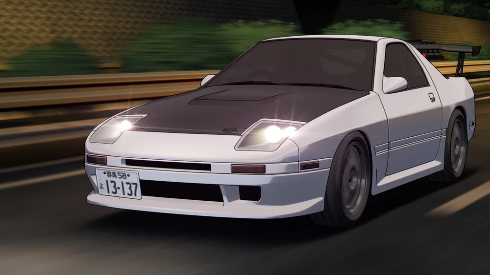
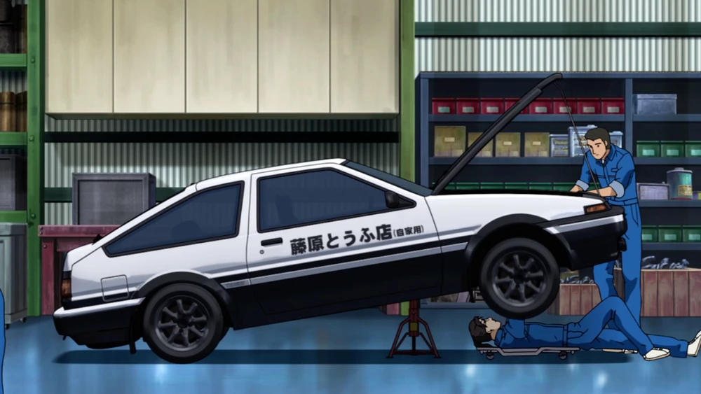
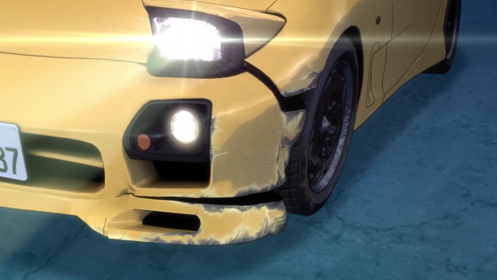
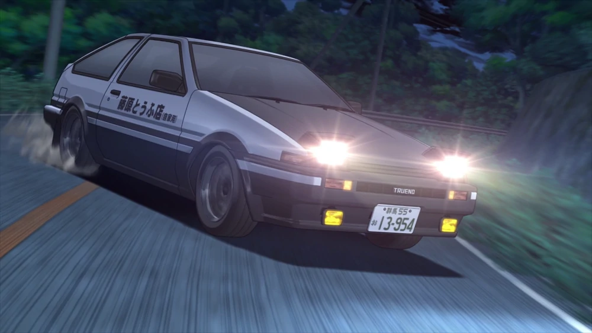
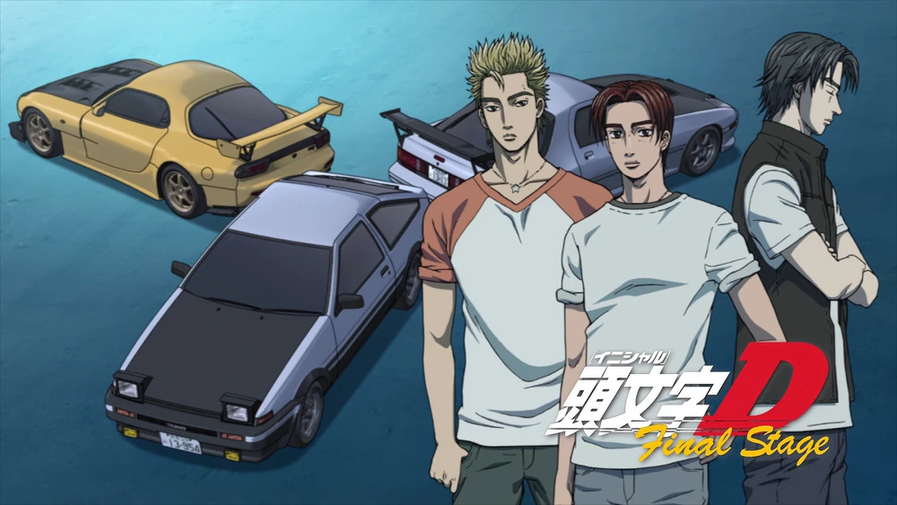

Notícias Project D
Ryosuke revela modificações incríveis no seu RX-7 FC!
A Lenda do RX-7 FC Evolui: Ryosuke do Project D surpreende com modificações de alto desempenho!
Uma onda de excitação varreu a cena automobilística quando rumores sobre as impressionantes modificações realizadas no Mazda RX-7 FC de Ryosuke Takahashi, o renomado piloto e líder do famoso Project D, começaram a circular entre os entusiastas de carros. Os corredores e fãs estão ansiosos para descobrir como essas mudanças impactarão o desempenho já incrível do RX-7.
De acordo com fontes confiáveis próximas à equipe, as modificações foram meticulosamente planejadas e executadas pelos especialistas em tuning do Project D. O objetivo principal era aprimorar ainda mais as habilidades e o desempenho do RX-7, proporcionando a Ryosuke uma vantagem competitiva nas batalhas nas montanhas.
Essas modificações são um reflexo do compromisso implacável de Ryosuke e sua equipe com a busca da perfeição em cada aspecto de sua performance nas corridas. E, como sempre, os fãs esperam que essas mudanças resultem em batalhas eletrizantes nas montanhas, onde o RX-7 FC de Ryosuke mostrará seu poder inigualável e habilidades de domínio de curvas.
Resta aguardar ansiosamente o próximo encontro nas montanhas para testemunhar a verdadeira magnitude dessas modificações e ver se Ryosuke conseguirá superar seus adversários com seu RX-7 FC totalmente aprimorado.
O AE86 de Takumi renasce com uma nova alma no Project D!
Um renascimento épico: O AE86 de Takumi retorna com uma nova potência para desafiar as pistas do Project D!
Nas estradas do Project D, onde lendas do drift se encontram, uma notícia arrebatadora ecoa pelos corredores! O AE86 de Takumi Fujiwara, o piloto lendário conhecido como o "Fantasma de Akina", emergiu de uma restauração transformadora e agora está pronto para desafiar os limites da velocidade e do drift mais uma vez!
Após anos de batalhas épicas nas montanhas, Takumi decidiu levar seu AE86 para um novo patamar. Ele entregou o carro aos engenheiros do Project D, especialistas em personalização e aprimoramento de carros de drift.
As oficinas do Project D se tornaram um reduto de atividade frenética, com engenheiros dedicados trabalhando incansavelmente para aprimorar o AE86 de Takumi. Cada modificação foi cuidadosamente calculada para elevar o desempenho do carro a novas alturas.
Com sua nova aparência impecável e um conjunto de habilidades aprimorado, o AE86 se une às fileiras do Project D, pronto para enfrentar desafios ainda maiores e deixar sua marca no mundo do drift.
Com sua alma renovada e uma equipe formidável por trás dele, Takumi e o AE86 estão prontos para desafiar tudo o que está pela frente. As ruas tremerão ao som dos pneus queimando e dos corações acelerados dos fãs.
Preparem-se, fãs do drift! O AE86 de Takumi está de volta para mostrar a todos o poder do Project D!
RX-7 FD de Keisuke sofre batida em uma corrida intensa!
Colisão no Limite: RX-7 FD de Keisuke enfrenta acidente em uma corrida de tirar o fôlego!
Um evento trágico abalou a comunidade automobilística quando o RX-7 FD de Keisuke Takahashi, piloto habilidoso e membro do renomado Project D, sofreu uma batida durante uma corrida intensa nas montanhas. O acidente ocorreu em uma curva desafiadora, deixando fãs e entusiastas preocupados com a condição do lendário esportivo.
De acordo com testemunhas oculares, Keisuke estava competindo em uma batalha acirrada contra um adversário habilidoso, quando a pressão do momento levou a uma manobra arriscada. Infelizmente, o RX-7 FD perdeu aderência e colidiu com a barreira de proteção, resultando em danos significativos ao veículo.
Imediatamente após o incidente, equipes de resgate e paramédicos foram acionados para prestar assistência a Keisuke e garantir sua segurança. Felizmente, o piloto escapou com ferimentos leves e foi levado para receber cuidados médicos adicionais como precaução. Apesar do susto, Keisuke mostrou coragem e otimismo em relação à sua recuperação e ao futuro de suas corridas.
Os fãs estão aguardando ansiosamente por atualizações sobre o estado do lendário RX-7 FD. Especula-se que a equipe do Project D esteja trabalhando incansavelmente para restaurar o veículo e trazê-lo de volta à sua antiga glória.
AE86 de Takumi do Project D conquista uma vitória incrível!
A Supremacia do AE86: Takumi do Project D deixa sua marca com uma vitória extraordinária nas montanhas!
Uma onda de euforia varreu a cena automobilística quando notícias sobre a vitória inesquecível de Takumi Fujiwara ao volante de seu lendário Toyota AE86, como membro do aclamado Project D, começaram a se espalhar rapidamente. A conquista épica de Takumi nas batalhas nas montanhas deixou os fãs extasiados e ansiosos para testemunhar seu talento excepcional mais uma vez.
Enfrentando adversários formidáveis em um desafio arrojado, Takumi deslumbrou a todos com sua habilidade inigualável de drifting e domínio das curvas. Seus movimentos precisos e sua condução confiante permitiram que o AE86 superasse qualquer obstáculo, deixando seus oponentes perplexos e incapazes de acompanhar seu ritmo arrojado.
A vitória de Takumi no Project D é um marco notável para ele e sua equipe. Sua dedicação incansável e sua paixão pela velocidade e pela arte da condução o levaram ao auge das corridas de montanha. A fama do Project D e a reputação de Takumi continuam a crescer, com muitos reconhecendo-os como os mestres indiscutíveis das pistas.
O AE86 de Takumi provou mais uma vez que é uma força a ser reconhecida, e seu legado certamente perdurará por gerações de corredores apaixonados.
A equipe de corrida que eleva os limites do automobilismo!
No limite da velocidade: Project D eleva o padrão do automobilismo com vitórias épicas e habilidades inigualáveis!
O Project D, uma equipe de corrida lendária e altamente respeitada, está redefinindo os padrões do automobilismo com suas conquistas impressionantes nas batalhas nas montanhas. Composta por pilotos habilidosos e uma equipe dedicada de mecânicos e estrategistas, o Project D tornou-se sinônimo de excelência nas pistas.
Liderada por Ryosuke Takahashi, o Project D cativa a imaginação dos entusiastas de carros com suas vitórias espetaculares e técnicas de condução excepcionais. Cada membro da equipe traz consigo uma paixão única pelo automobilismo, combinada com um conjunto de habilidades e conhecimentos que os tornam uma força imparável nas corridas.
Com seus veículos icônicos, como o Toyota AE86 de Takumi e o Mazda RX-7 FD de Keisuke, o Project D continua a desafiar os limites da performance e da inovação automotiva. A equipe é conhecida por suas modificações meticulosas, ajustes precisos e afinação perfeita, transformando seus carros em máquinas imbatíveis nas pistas.
Além da habilidade técnica, o Project D também se destaca pela estratégia inteligente e pela compreensão profunda das nuances das corridas nas montanhas. Cada membro da equipe desempenha um papel crucial, desde a seleção cuidadosa de rotas até a análise meticulosa dos adversários, permitindo que eles dominem cada curva e cada reta com maestria.
O mundo automobilístico está atento aos próximos passos dessa equipe notável, ansioso por presenciar sua busca incansável pela excelência e pelas emoções que suas corridas sempre proporcionam.